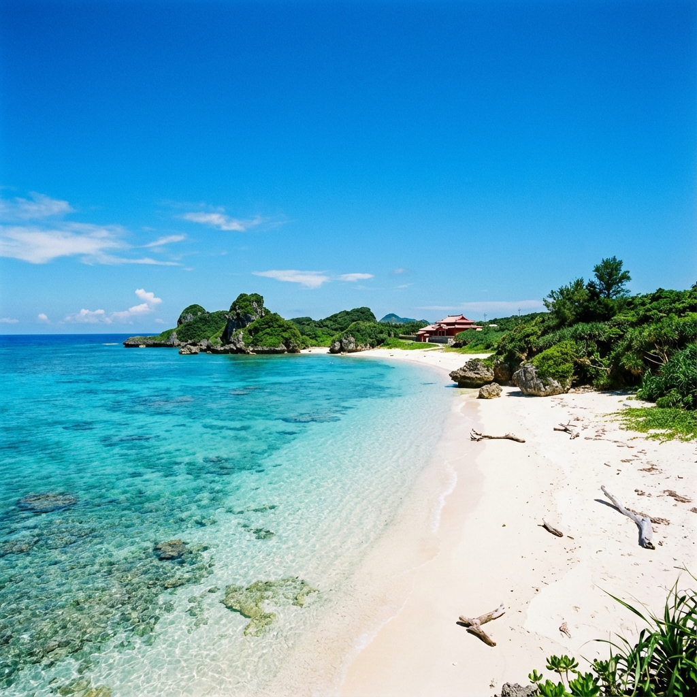
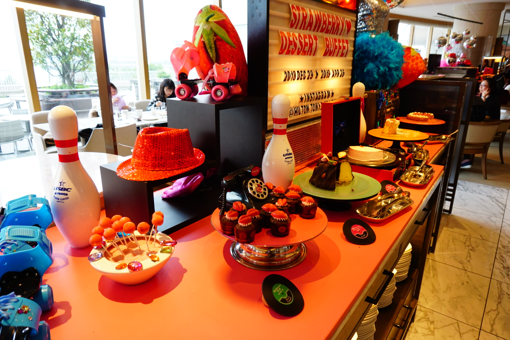
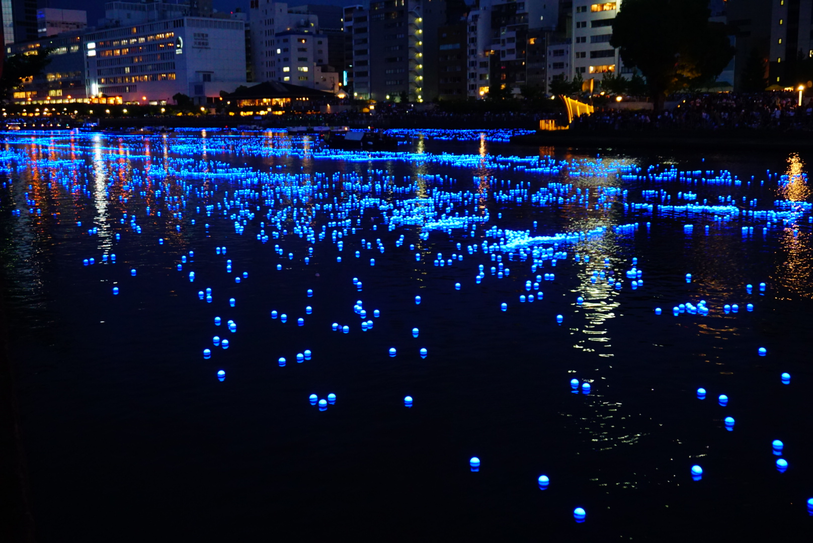

OkinawaTrip
行程
航班
價格

四天三夜
沖繩夢幻之旅
享受碧海藍天，品味琉球美食，體驗最極致的放鬆。
TWD
25,000
起 / 人
查看行程
航班資訊
TPE
桃園國際機場
08:10 (Terminal 2)
中華航空 China Airlines
CI 120
去程 • 2小時35分
OKA
那霸空港
10:45
OKA
那霸空港
11:55
中華航空 China Airlines
CI 121
回程 • 1小時40分
TPE
桃園國際機場
12:35
每日行程
Day 01
初抵沖繩・漫步海島

桃園國際機場 → 那霸空港
瀨長島 Umikaji Terrace 複合型屋台村
貓咪之島
自由活動推薦：
國際通、櫻坂通、新天堂通、浮島通
早餐
機上輕食
午餐
自理
晚餐
黑豬肉放題 或 風味定食
Day 02
蔚藍海洋・絕美海景
美麗海水族館
古宇利跨海大橋 (遇見古宇利藍)
蝦蝦飯 (推薦自費品嚐)
美麗沙灘玩水
御果子御殿
星野 BANTA CAFÉ
(絕美海景下午茶，贈送飲品一杯)
早餐
飯店內早餐
午餐
山原御殿定食 或 日式定食
晚餐
燒烤吃到飽 或 琉球風味餐
Day 03
文化體驗・購物樂趣

免稅店
玉泉洞・王國村 (琉球大鼓秀表演)
藥妝店
全新 IIAS 豐崎購物中心
早餐
飯店內早餐
午餐
80種料理自助餐 或 琉球風味自助餐
晚餐
逛街自理
Day 04
滿載而歸
See You Again
那霸空港 → 桃園國際機場
溫暖的家
早餐
飯店內早餐
午餐
機上餐食